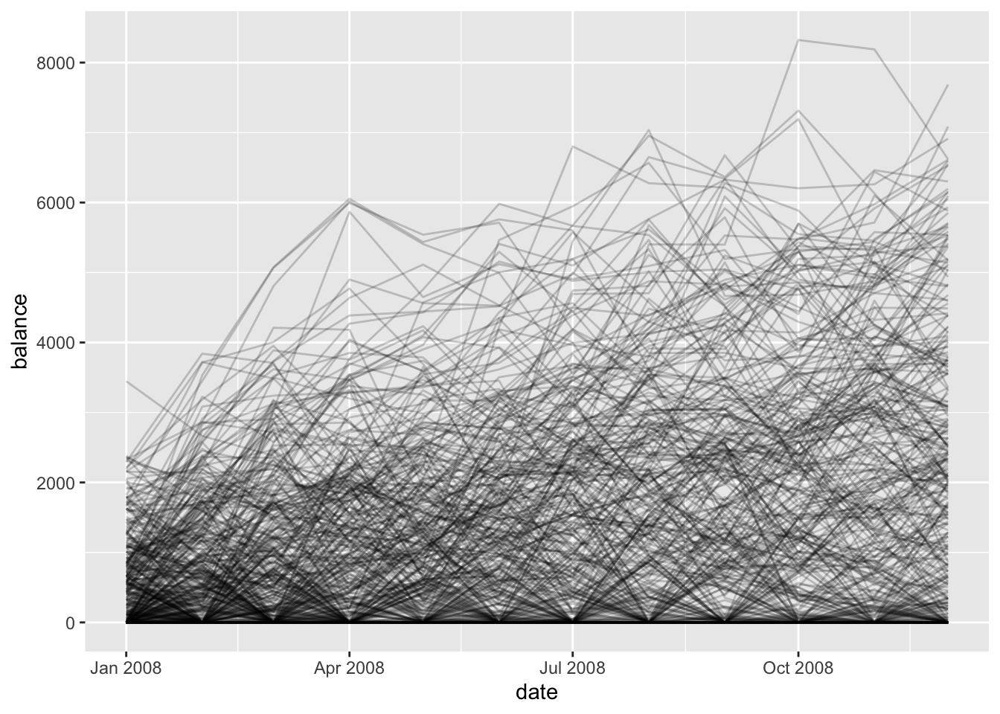

Ever wondered how long your savings will last? Your bank wants to know that too.
Survival Analysis
In my past life as an ecologist, we learned about survival models, but it turns out they show up in all sorts of domains (economics, engineering, and sociology to name a few). Wikipedia puts it well:
Survival analysis attempts to answer certain questions, such as what is the proportion of a population which will survive past a certain time? Of those that survive, at what rate will they die or fail? Can multiple causes of death or failure be taken into account? How do particular circumstances or characteristics increase or decrease the probability of survival?
Now that I work in finance, I’ve learned that Asset & Liability Managers (ALM) at the bank are interested in estimating the average life of various types of bank accounts. A good average life model allows ALM folks to predict future patterns in deposits, a hot topic in this current economic environment.
Average Life of Bank Accounts
Account Balances
Let’s start with some fake data.
set.seed(123)library(tidyverse)
── Attaching core tidyverse packages ──────────────────────── tidyverse 2.0.0 ──
✔ dplyr 1.1.4 ✔ readr 2.1.5
✔ forcats 1.0.1 ✔ stringr 1.5.2
✔ ggplot2 4.0.0 ✔ tibble 3.3.0
✔ lubridate 1.9.4 ✔ tidyr 1.3.1
✔ purrr 1.1.0
── Conflicts ────────────────────────────────────────── tidyverse_conflicts() ──
✖ dplyr::filter() masks stats::filter()
✖ dplyr::lag() masks stats::lag()
ℹ Use the conflicted package (<http://conflicted.r-lib.org/>) to force all conflicts to become errors
So we’ve got monthly balances for one year from 500 accounts. Let’s plot the data!
ggplot(balance_by_month, aes(x = date, y = balance, fill = account_id)) +geom_line(alpha =0.2)

We’ve got some random walks floored at zero. We’re assuming that balances can’t be negative. It looks like some folks are doing really well but others not so much. How do we translate these balances to survival models.
Defining the Event
Survival analysis is all about examining time-to-event phenomena. Back in ecology land, the event was death, but when does a bank account die? Earlier we floored balances at zero. Some banks charge overdraft fees, so when a customer reaches zero, they’re likely to be charged a fee. We’ll just assume that reaching zero means that a bank account is done for. First let’s calculate the first month that the account hit zero. That’s when the “death” event occurs.
It looks like a cascade of death events. Most occur in the first month with fewer and fewer as the year goes on. But we’ve got a problem! We need to represent this in the data. In this analysis, we don’t want bank accounts to suddenly come back alive! We need to define our event clearly.